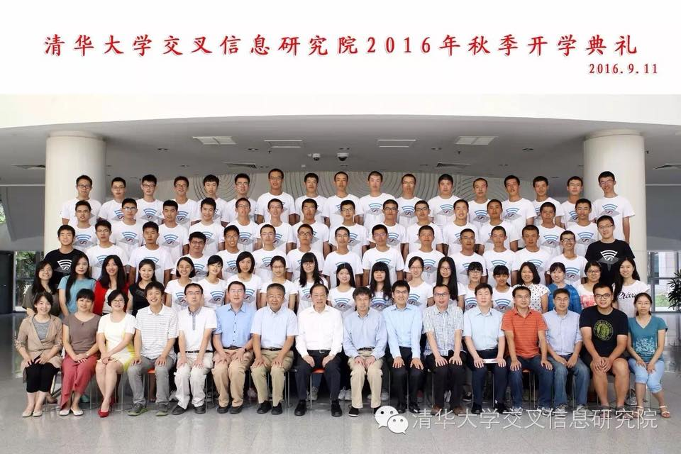
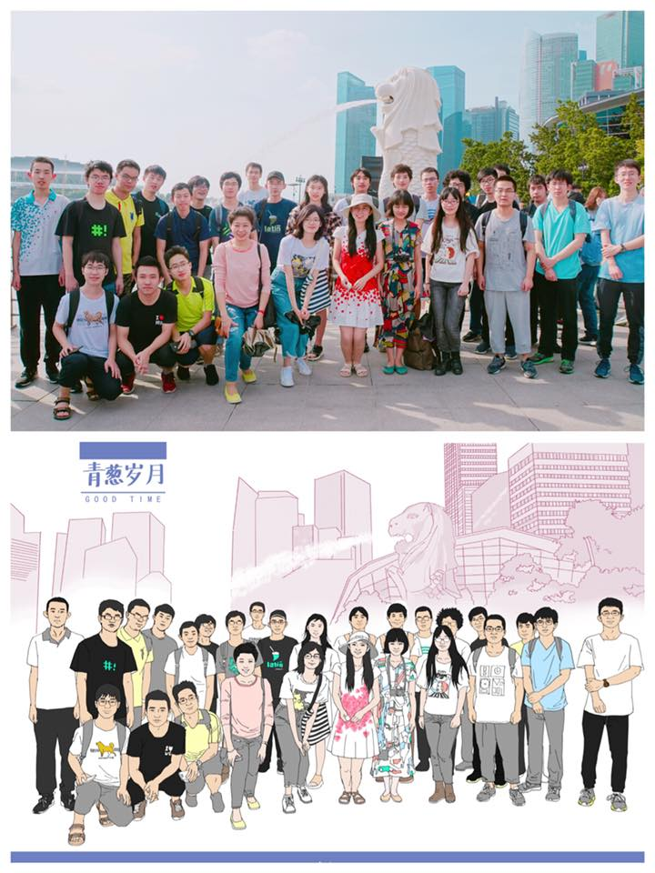

<div id="ajax-page" class="ajax-page-content">
    <div class="ajax-page-wrapper">
        <div class="ajax-page-nav">
            <!--<div class="nav-item ajax-page-prev-next">-->
                <!--<a class="ajax-page-load" href="portfolio-1.html"><i class="zmdi zmdi-chevron-left"></i></a>-->
                <!--<a class="ajax-page-load" href="portfolio-3.html"><i class="zmdi zmdi-chevron-right"></i></a>-->
            <!--</div>-->
            <div class="nav-item ajax-page-close-button">
                <a id="ajax-page-close-button" href="#"><i class="zmdi zmdi-close"></i></a>
            </div>
        </div>

        <div class="ajax-page-title">
            <h1>My Service as the Senior Year Class Presidesnt for Tsinghua IIIS Yao Class</h1>
        </div>

        <div class="row">
            <div class="col-sm-7 col-md-7 portfolio-block">
                <div class="owl-carousel portfolio-page-carousel">
                    <div class="item">
                        
                    </div>
                    <div class="item">
                        
                    </div>
                </div>

                <!--
                <div class="portfolio-page-image">
                    
                </div>
                -->

                <script type="text/javascript">
                    jQuery(document).ready(function($){

                        $('.portfolio-page-carousel').owlCarousel({
                            smartSpeed:1200,
                            items: 1,
                            loop: true,
                            dots: true,
                            nav: true,
                            navText: false,
                            margin: 10
                        });

                    });
                </script>
            </div>

            <div class="col-sm-5 col-md-5 portfolio-block">
                <!-- Project Description -->
                <div class="block-title">
                    <h3>Description</h3>
                </div>
                <ul class="project-general-info">
                    <li><p><i class="fa fa-user"></i>Shiyin Wang</p></li>
                    <li><p><i class="fa fa-calendar"></i> 2019 Sep ~ 2020 Jul</p></li>
                </ul>

                <p class="text-justify">I used to be longing for being the class president in my primary school for it was regarded as an honor of leadership and influence. But I never succeed to get the top votes and always ended with a committee member.</p>
                <p class="text-justify">The attitude changed as we became teenagers. In middle school and high school, the overwhelmed workload and responsibility for class president stopped me from running for it. Probably because I was more focus on study and math competition, I was blessed to enter one of the best programs in college. Later on, in my first three years at Yao Class, I continued to stay away from these student affairs.</p>
                <p class="text-justify">I had some unsatisfactory feelings though. The responsibility of the class president is far beyond our school years. For example, the last class committees are responsible for the organization of the yearly reunion, which I think Yao Class 2013-2017 did a very good example. But on the other hand, if we do not have a reliable class president, nobody will contribute to the reunions after graduation. I do not like to say the class presidents in my middle school and high school did a good job on this.</p>
                <p class="text-justify">Finally, I stepped out today and became the class president.</p>
                <p class="text-justify">Fortunately, there are barely any routine or occasional responsibilities for senior class presidents. I decide to use my influence to organize a series of events in the spring of 2020 when everyone will be free from the graduate school application. For example, a graduation trip to Japan/Korean/Bali/Nepal and weekend trips in Beijing city.</p>
                <!-- /Project Description -->

                <!--&lt;!&ndash; Technology &ndash;&gt;-->
                <div class="tags-block">
                    <!--<div class="block-title">-->
                        <!--<h3>Technology</h3>-->
                    <!--</div>-->
                    <ul class="tags">
                        <li><a>Leadership</a></li>
                    </ul>
                </div>
                <!--&lt;!&ndash; /Technology &ndash;&gt;-->

                <!-- Share Buttons -->
                <div class="btn-group share-buttons">
                    <div class="block-title">
                        <h3>Share</h3>
                    </div>
                    <a href="https://www.facebook.com/sharer/sharer.php?u=https://shiyinw.github.io/" target="_blank" class="btn"><i class="fa fa-facebook"></i> </a>
                    <a href="http://www.twitter.com/share?url=https://shiyinw.github.io/" target="_blank" class="btn"><i class="fa fa-twitter"></i> </a>
                </div>
                <!-- /Share Buttons -->
            </div>
        </div>
    </div>
</div>
